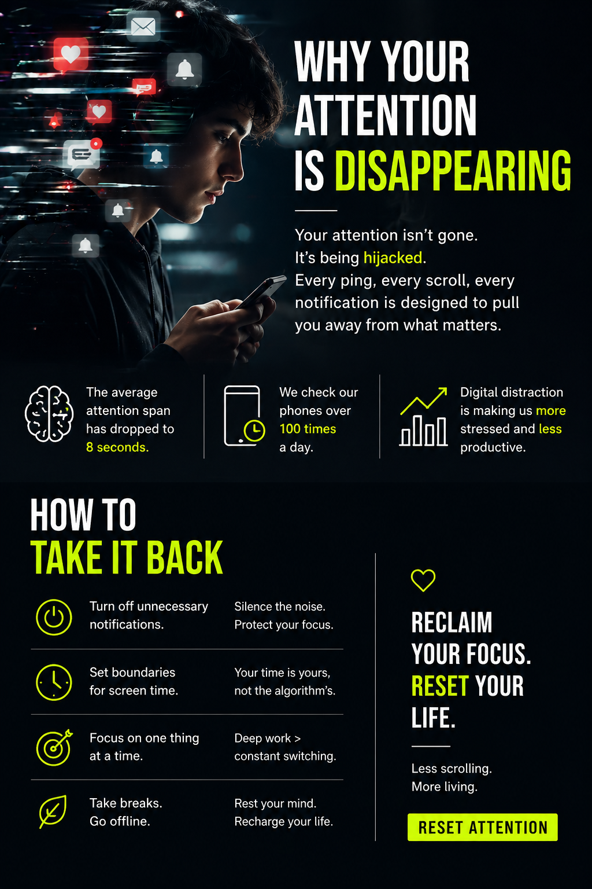
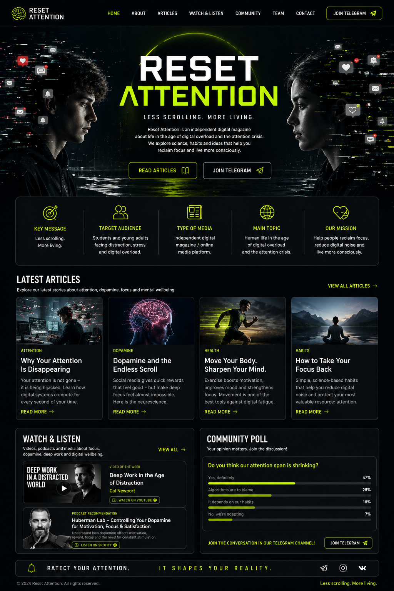
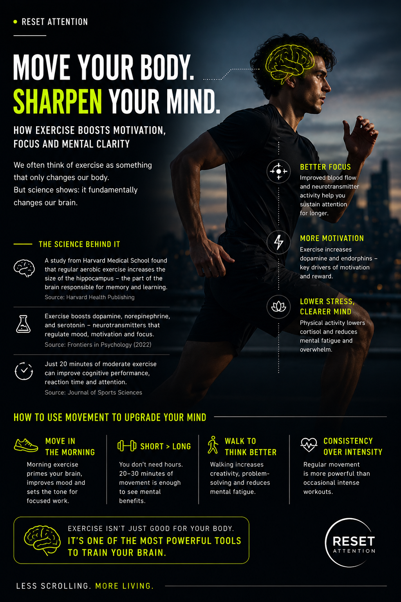
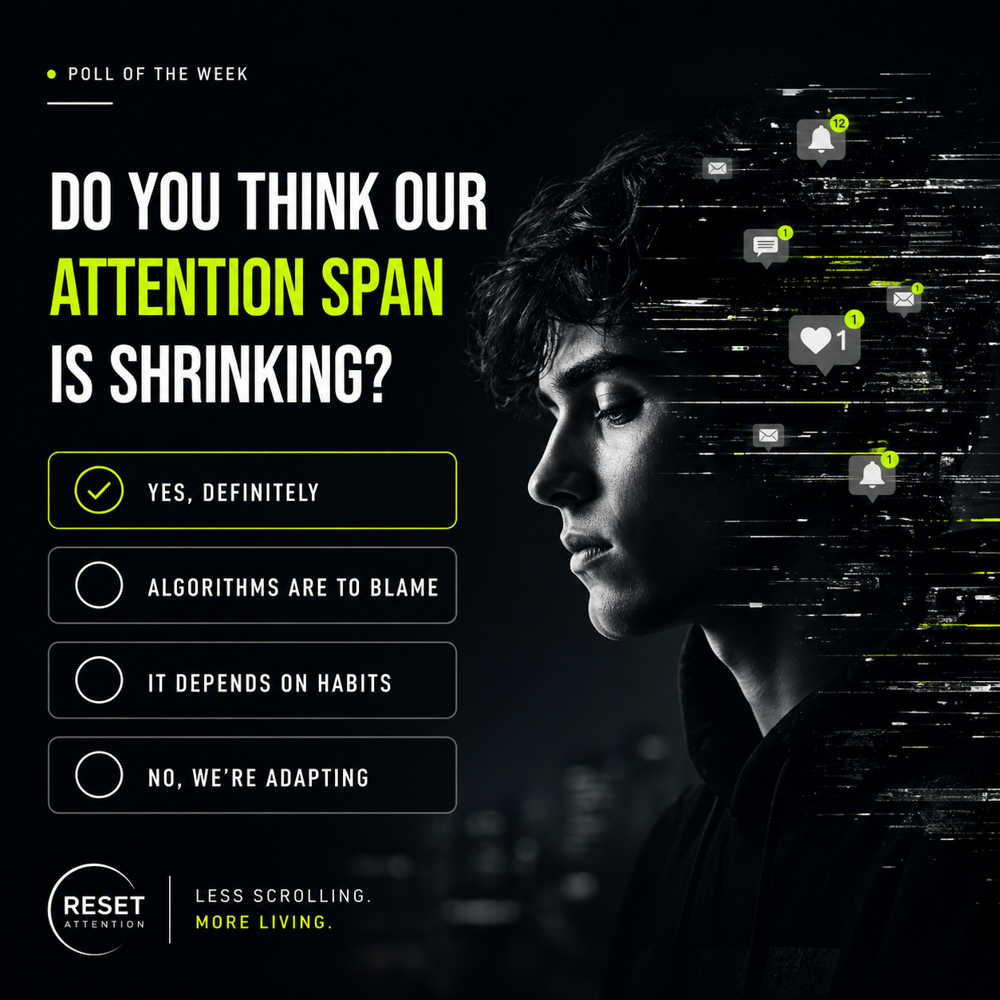

Attention Crisis
Why Your Attention Is Disappearing

Your attention is not gone — it is being hijacked. Every notification, scroll and recommendation is designed to pull you away from what matters. In the attention economy, focus becomes a product, and platforms compete for every second of your time.
Modern platforms are built around speed, novelty and instant feedback. A like, a message, a breaking news alert or a new short video can interrupt concentration before a thought becomes deep. The problem is not only that we spend time online. The deeper issue is that we are constantly trained to switch.
Attention is not just a skill. It is the place where your life happens.
Why it matters
When attention becomes fragmented, studying becomes harder, reading feels slower and meaningful work starts to feel uncomfortable. This is why digital overload is not only a personal problem — it is a social and educational challenge.
What helps
- Turn off non-essential notifications.
- Create phone-free study blocks.
- Keep your phone away during reading and deep work.
- Protect moments of boredom — they help the mind recover.
Dopamine
Dopamine and the Endless Scroll

Social media gives the brain quick rewards: likes, messages, short videos and novelty. These rewards can create dopamine spikes that make scrolling feel exciting — but they can also make deep focus feel boring.
Dopamine is not simply “pleasure.” It is strongly connected with motivation, anticipation and reward-seeking. When the brain expects quick stimulation every few seconds, slower tasks such as reading, writing or studying can feel less attractive.
The goal is not to eliminate dopamine. The goal is to stop letting random apps control it.
The problem with constant stimulation
Endless feeds are powerful because they are unpredictable. You never know what the next post will be. This unpredictability keeps the brain searching for the next reward, even when the experience is no longer satisfying.
How to reset stimulation
- Do not start the day with social media.
- Avoid “dopamine stacking”: scrolling, music, snacks and multitasking at the same time.
- Use low-stimulation breaks: walking, silence, stretching or journaling.
- Train motivation through effort, not only instant reward.
Health & Motivation
Move Your Body. Sharpen Your Mind.

Exercise is not only fitness. Movement supports mood, motivation and attention. A walk, short workout or stretching break can reduce mental fatigue and make it easier to return to deep focus.
Physical activity helps the brain shift from passive consumption to active energy. It improves blood flow, reduces stress and gives the mind a natural reset. In the context of digital overload, movement becomes a tool for attention recovery.
Movement is one of the simplest ways to interrupt the scroll cycle.
Why it helps focus
After exercise, many people feel more awake, more motivated and less mentally foggy. Even a short session can help break the loop of scrolling, fatigue and procrastination.
Simple movement protocol
- Walk for 10–20 minutes before a study session.
- Use short workouts instead of long scrolling breaks.
- Stretch when your brain feels stuck.
- Choose consistency over intensity.
Focus Recovery
How to Take Your Focus Back

Reclaiming attention does not mean rejecting technology. It means designing better boundaries. Focus grows when you reduce interruptions and practice single-tasking.
The modern internet makes distraction easy by default. That means focus has to be designed intentionally. The question is not “How do I become perfectly disciplined?” The better question is: “How do I make distraction less automatic?”
You do not need a perfect digital detox. You need better defaults.
The RESET method
- R — Remove unnecessary notifications.
- E — Enter deep work blocks.
- S — Schedule phone-free time.
- E — Embrace boredom and silence.
- T — Train attention through reading, movement and single-tasking.
Attention is trainable. What you repeat every day shapes what your brain learns to expect. Less scrolling means more space for thought, creativity and real life.